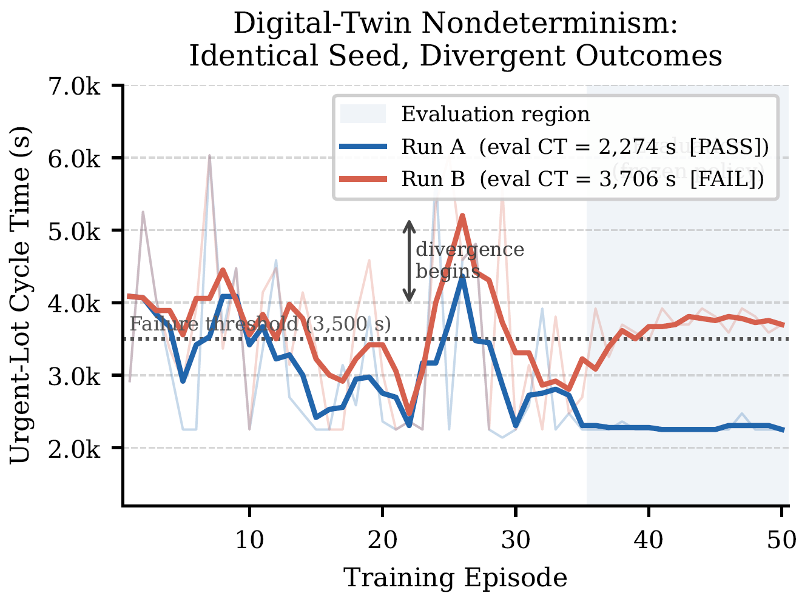
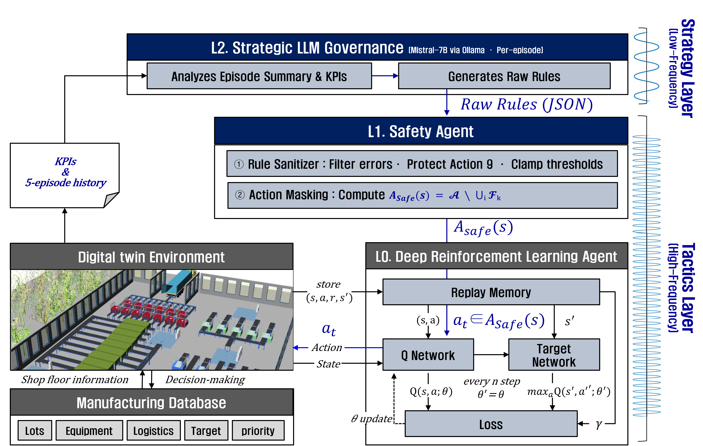
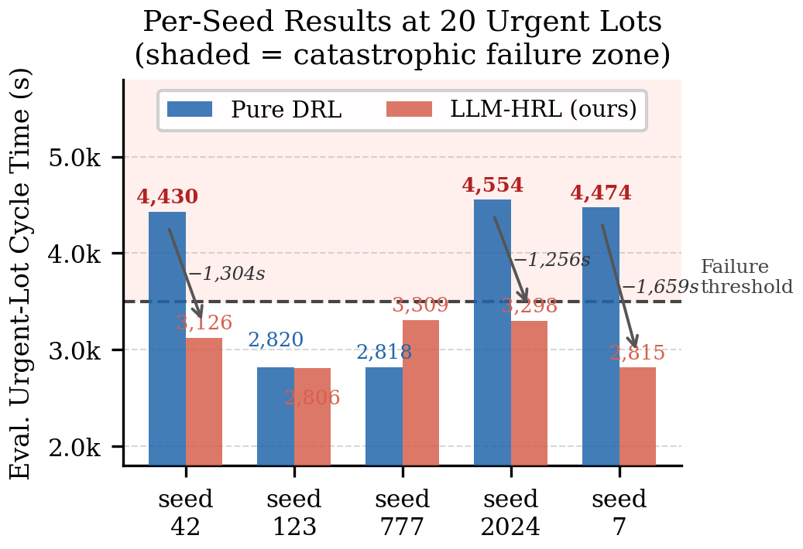
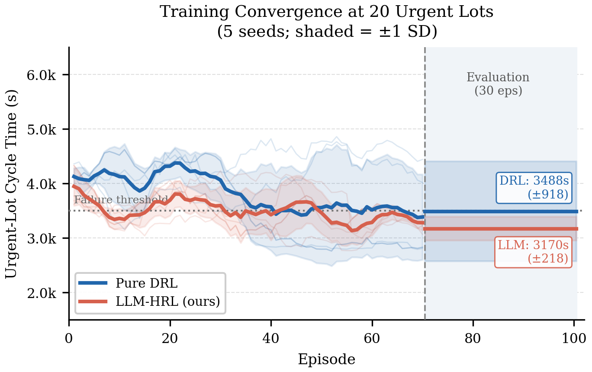

배경
반도체 제조 긴급 로트 스케줄링
🏭 제조 환경
수백 공정 · 이종 장비 결합 — 복잡한 비정상적 시스템
6개 순차 공정(A–F)임계 단계 이종 장비
⚡ 긴급 로트
전체의 ~7.7%지만 납기·품질 위반 시 cascading 영향
CT > 3,500s → 납기 위반 + 수율 손실
🤖 기존 DRL의 한계
학습은 되지만 실행마다 결과가 달라짐
단일 실행으로는 신뢰성 검증 불가

3 / 18
반도체 제조 디지털 트윈 환경에서 LLM 거버넌스 기반 계층형 강화학습 스케줄러의 신뢰성 향상
Hawaii International Conference on System Sciences
iCore 등급
2027년 개최
년 역사
🌺 Big Island
제출 미니트랙
Dependable Technical and Socio-technical Systems Engineering
신뢰성 공학 · 소시오테크니컬 시스템 · AI 의존성
논문의 포지셔닝
Dependability 관점의 DRL 분석 — 제조 분야 최초
LLM 거버넌스 = Fault-Tolerance 메커니즘
실제 반도체 제조 디지털 트윈 실증
분산 평가 기반 통계 검증 (p = 0.010)
시스템 과학 분야 최고 수준 학회 —
IS·경영·공학 융합 연구에 최적 포럼
수백 공정 · 이종 장비 결합 — 복잡한 비정상적 시스템
전체의 ~7.7%지만 납기·품질 위반 시 cascading 영향
CT > 3,500s → 납기 위반 + 수율 손실
학습은 되지만 실행마다 결과가 달라짐
단일 실행으로는 신뢰성 검증 불가
에이전트가 환경(Digital Twin)과 상호작용하며 누적 보상을 최대화하는 정책(π)을 학습
동일 설정 5회 실행 시 3회 실패(60%)
시뮬레이터 수준 비결정성이 학습 궤적을 발산
→ 거버넌스 레이어 없이는 신뢰성 보장 불가
진입점 · 에피소드 루프 제어 · 각 클래스 orchestrate
DRL 에이전트 · Q-Network 학습
환경 인터페이스 · 상태/보상 계산
Siemens Plant Simulation COM API 래퍼
실험 데이터 생성 · 시드 관리
기존 구조에 llm_agent.py(L2) · safety_agent.py(L1) 추가
→ twin.py 인터페이스 변경 최소화
→ main.py에서 두 에이전트 추가 호출만으로 구현
완전히 동일한 시드·설정으로 5회 실행 시
3회 실패(CT > 3,500s), 2회만 성공
시뮬레이터 수준
비결정성
긴급 로트
과소 우선화
CT > 3,500s
납기 위반
LLM 거버넌스 = F→E→F 연쇄를 차단하는 Fault-Tolerance 메커니즘

동일 설정 2회 실행 — 초반 궤적 유사 후 발산
CT ≈ 2,274s (성공) vs CT ≈ 3,706s (실패)
LLM이 매 에피소드 KPI를 분석하고 행동 제약 룰을 동적 생성
→ DRL이 비결정성에 흔들리지 않도록 학습 궤적 안내
KPI 분석 → 룰 생성 (Mistral-7B, 로컬)
룰 해석 → 행동 마스크 생성 · 룰 새니타이저
허용 행동 집합 내 최적 행동 선택
디지털 트윈 — Siemens Tecnomatix Plant Simulation

새니타이저 통과 후 잔여 오류율
활성화된 모든 룰의 금지 행동을 전체 집합에서 제거
상태 수신 → 룰 평가 → 마스크 생성
→ L0에 허용 행동 집합 전달
→ 실시간 개입 비율 ~2–4%
허용 집합 내에서만 Q-값 최대화 행동 선택
Rainbow DQN 단독 (L1/L2 없음)
3계층 프레임워크 전체
디지털 트윈은 내부적으로 비결정적이므로
단일 시드로는 결과 재현 불가
N = 5 독립 시드로 각 조건 실행
실패율 · 분산을 분포로 보고
통계 검증:
이항 검정 (단측, H₀: ρ=0.60)
Pure DRL 실패율
(5회 중 3회 실패)
LLM-HRL 실패율
(5회 모두 성공)
이항 검정 p = 0.010 · CT 개선 −19.6% · 분산 감소 73%
신뢰성 비교 (긴급 로트 20개, N=5)
생산 달성률(TMR) 양 조건 동일 (p > 0.05)
→ 처리량 손실 없이 신뢰성만 향상

가로축: 5개 독립 시드 · 세로축: 평가 CT(s) · 빨간 음영: CT > 3,500s 실패 구역
거버넌스 = 성능 최적화기가 아닌
실패 방지 메커니즘
DRL이 이미 잘 수렴한 시드에서는
추가 개입 없이 그대로 유지
병목 경쟁 부족 — 거버넌스 추가 가치 없음
DRL 불안정 시작 — 거버넌스 부분 개선
대비 최대 — 거버넌스가 실패를 완전 제거


가로축: 훈련 에피소드 · 세로축: 평가 CT(s) · 음영: ±1 SD
빨간선: Pure DRL (분산 유지) · 초록선: LLM-HRL (분산 수렴)
훈련 중 긴급 로트 존재 시 Action 9(우선화)를 단 몇 번만 강제해도 에이전트가 올바른 정책을 학습 → 이후 스스로 유지
평가 시 룰 발동 비율 ＜2%
거버넌스 = 런타임 필터가 아닌
훈련 궤적 교정자
동일 설정 60% 실패율 — 분산이
시뮬레이터 수준 비결정성에서 비롯됨을 실증
Laprie 분류 체계 적용 — F→E→F 연쇄 차단
실패율 60% → 0%, p = 0.010 (통계적 유의)
14.5% 오류율 (척도·역전·억제)
새니타이저로 잔여 오류 0%로 교정
Questions & Discussion
→ 0% 실패율
분산 감소
통계적 유의성